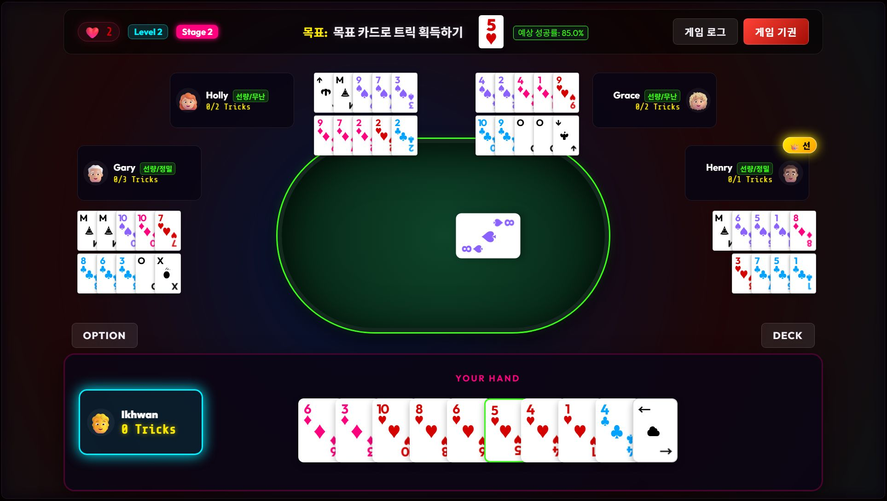

August ended up being a month where far more unfolded than I had ever anticipated.
In fact, I thought development was almost finished in July, and I planned to start promoting the game in August. However, my very first post on Reddit to promote the game was met with harsh reactions.
When I first started turning the game idea into reality, I actually liked the initial UI and artwork created by Antigravity, and I was satisfied with everything built on top of it. But people judged the result as looking like "AI slop," and I couldn't get any positive feedback beyond that.
[AI slop의 표본]
(An Example of "AI Slop")

Looking back on myself after that, I started reflecting on how much I had truly made this game with the awareness of being a director. It made sense in hindsight—making a video game all by myself for the first time, I realized I was still approaching development from the mindset of a board game designer. Especially when creating board games, once a publisher likes the idea, they handle the art direction and produce a beautiful final product. Used to that environment, I had spent over a month developing the video game while only focusing on the core gameplay mechanics.
In the midst of that, thanks to some acquaintances who stepped in to playtest, I realized that a major overhaul of the game systems was also needed. When I started development, my goal was to combine a card game with roguelike elements, but there came a moment when I judged that this wouldn't work with the current gameplay. So I decided to overhaul the game structure completely.
All of this happened in early August. Just when I thought the game was nearly finished, the moment arrived where I had to tear down and rebuild both the game's structure and all of its artwork. I had thought there was plenty of time left until Steam Next Fest in October, but suddenly I was in a situation where I had to remake the entire game. On top of that, when I asked AI for an estimated timeline for this scope of work, it projected that it would take several months. Interestingly, when you simply ask an AI for an estimate like this, it calculates and responds based on human working speed. So when I asked how fast it could do it if it handled the work itself, a fairly realistic number came out.
Around this time, fortunately, my wife wanted to subscribe to ChatGPT for fitness tracking, so I ended up using three AI tools simultaneously: Claude, Antigravity, and Codex. This allowed me to speed up the work. Honestly, once I started using Claude, I hadn't been using Antigravity much for video game development. But with the urgent situation, I had to use it as well. Although it was an urgent time, I still remember this as the most interesting period of developing a game with AI—what is known as orchestration. Testing the performance of all three tools, I began assigning tasks based on what each did best: ultimately, Claude performed best, so it took the lead conductor role; Codex did much of the actual heavy lifting in restructuring the game code; and Antigravity was deployed for simulations and miscellaneous background tasks. The artwork overhaul also moved forward: we created multiple proposals for the new visual style, picked the one I liked best, and reworked all the art based on it. Since Claude had established the winning proposal, Claude ended up solving most of it.
The result is what you see today, and I am satisfied with it. This kind of simple artwork matches my personal taste, and while some people might still feel that being overly simple gives it a "web game" look, I believe this design suits a card game very well. I hope you like it too. That said, I've decided to avoid this kind of design for my next project if possible.